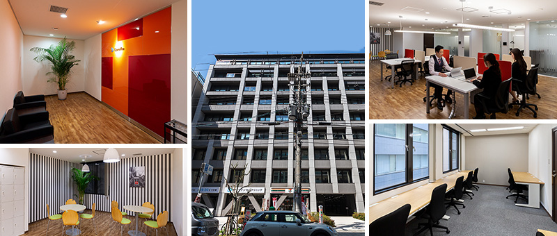
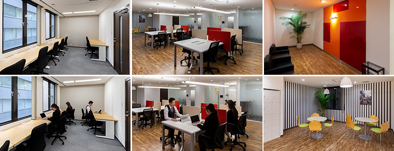
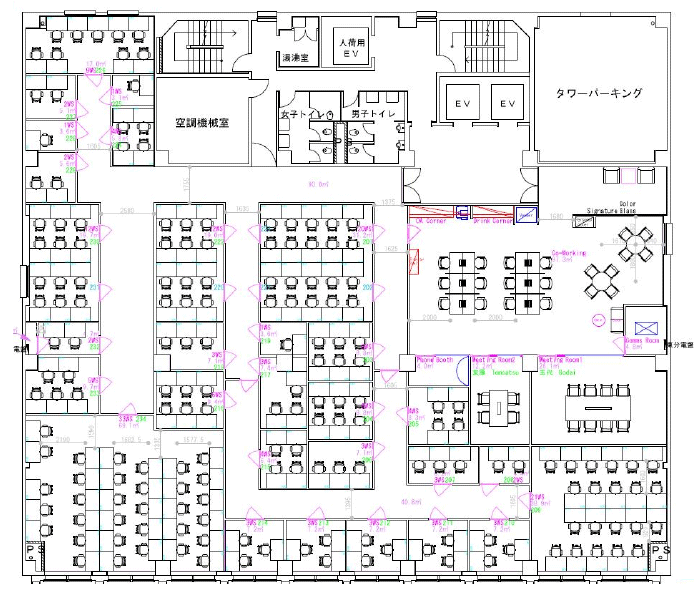
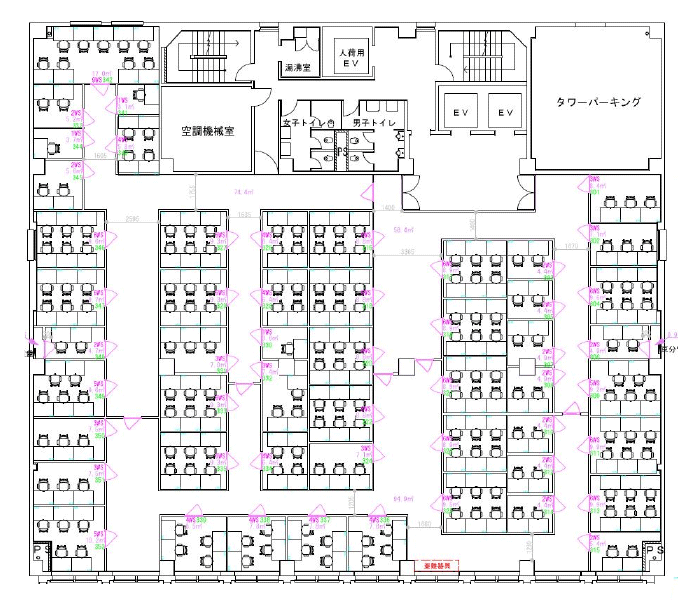

大阪平野町のレンタルオフィス｜Openoffice：東京・大阪をはじめ全国に50拠点以上
- 【個室レンタルオフィス】オープンオフィス HOME
- オープンオフィス大阪平野町
【個室レンタルオフィス】オープンオフィス 大阪平野町
オープンオフィス大阪平野町センターは、大阪市のビジネスの中心エリアである、大阪市中央区平野町に位置するレンタルオフィス・コワーキングスペースです。大阪市中央区には、日本を代表する大手企業のオフィスが集まり、特にこの平野町周辺には、製薬会社やその関連ビジネスの企業のオフィスが集中しているエリアになります。

オープンオフィス大阪平野町周辺のMap
オープンオフィス大阪平野町の住所・アクセス
住所:
大阪府大阪市中央区平野町2-5-8 平野町センチュリービル 2F 3F空港からのアクセス:
関西国際空港から南海難波駅、なんば駅を経由し「淀屋橋駅」まで約60分関西国際空港からリムジンバスでハービス大阪まで約60分 淀屋橋までタクシーで10分
大阪空港（伊丹空港）から、大阪モノレール千里中央駅を経由し「淀屋橋駅」まで約45分
大阪空港（伊丹空港）からリムジンバスでハービス大阪まで約25分 淀屋橋までタクシーで10分
電車からのアクセス:
地下鉄御堂筋線・京阪本線「淀屋橋駅」11番出口より徒歩5分地下鉄堺筋線・京阪本線「北浜駅」6番出口より徒歩6分
お車でのアクセス：
御堂筋「平野町3」交差点を左折 200m進んだ左側オープンオフィス大阪平野町の特長
- 製薬会社・金融機関集まる大阪市・平野町
- 淀屋橋駅・北浜駅より徒歩5分程度
- 関西主要エリアへ抜群のアクセス
- 大阪支店・営業所としても最適
- 起業時のオフィスにも最適

オープンオフィス大阪平野町のフロアマップ


※フロア内は禁煙です。
※こちらはイメージ図となりますので、状況が異なる場合は現況を優先させていただきます。
| ◆初回納入金 | 利用料1ヶ月分の保証金 |
|---|---|
| ◆共益費 | 水道光熱費、ビル共益費、ゴミ出し、フロア・トイレの清掃、共有部分の消耗品代を含みます。 |
オープンオフィス大阪平野町が提供するオフィスサービス
-

高速インターネット
-

カラーレーザーコピー
専用のカードでコピーが出来ます -

ICカードキー
セキュリティを向上させています -

ミーティングルーム
インターネットで予約していただけます -

Wi-Fi完備

ネットワークプリンタ・スキャナ部屋のパソコンで操作できます
オープンオフィス大阪平野町近隣のスポット
銀行
三菱UFJ銀行 大阪中央支店
百十四銀行 大阪支店
りそな銀行 御堂筋支店
中国銀行 大阪支店
京都銀行 大阪支店
北陸銀行 大阪支店
愛媛銀行 大阪支店
レストラン
本湖月 （会席料理）
尽誠 （寿司）
中国菜 火ノ鳥 （中華料理）
エニェ （スペイン料理）
カランドリエ （フレンチ）
ポンテ ベッキオ （イタリアン）
ホテル
ハイアットリージェンシー大阪
ホテルニューオータニ大阪
スイスホテル南海大阪
ザ・リッツ・カールトン大阪
大阪マリオット都ホテル
レジャー
コナミスポーツクラブ北浜
映画館・エンターテイメント
TOHOシネマズ梅田
大阪ステーションシティシネマ
リージャスグループのご案内
リージャス・グループは、柔軟なワークスペースを提供する世界最大の企業です。そのネットワークは世界120カ国1,100都市、3300拠点に及びます。会員数は250万人で、業界で成功を収める大小様々な企業や起業家の方々にご利用いただいています。
リージャスは、個室タイプのレンタルオフィス、コワーキングスペースなど多彩なオフィスプラン、近年需要が高まるモバイルワークやバーチャルオフィス、障害復旧サービスの提供を通じ、お客様が予算やワークスタイルに合わせて仕事を行うことができる環境を提供いたします。